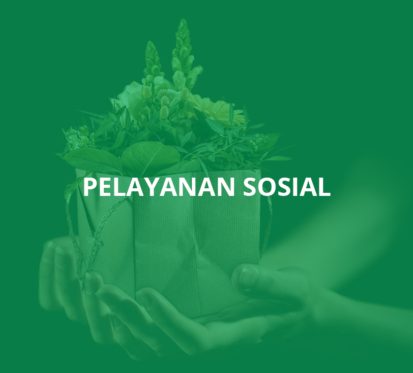
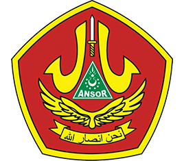

PROGRAM
TAUSYIAH
MEDIA
ORGANISASI

"Mewarisi bumi ini artinya membangunnya agar menjadi suatu dunia yang sejahtera, aman, makmur, yang di dalamnya berisi keadilan dan kebenaran yang dijunjung tinggi"
KH. Wahab Hasbullah, Surabaya 1971

|
||
|  |

|

|
|
Pemimpin Pemaaf Sabtu, 11 Agustus 2017 19:00 oleh Ahmad Mustofa Bisri Ka'b Ibn Zuhair penyair Arab kenamaan adalah penyair dari keluarga penyair. Ayahnya, Zuhair: kakeknya, Abu Sulma: kedua bibinya Khansa dan Sulma; saudaranya, Bujair; kedua sepupunya Tamadhir dan Shahkr; keponakannya, 'Uqbah Ibn Bujair; dan cucunya. 'Awwam Ibn 'Uqbah; kesemuannya adalah penyair terkenal di zaman Jahiliyah... (baca lebih) |
Terorisme Harus DilawanSabtu, 11 Agustus 2017 18:35 |
Mabadi Khaira UmmahSabtu, 11 Agustus 2017 17:09 |
Islam dan Sistem PerekonomiannyaSabtu, 11 Agustus 2017 16:13 |
Pendekatan Dakwah untuk Kaum Dlu'afaSabtu, 11 Agustus 2017 16:13 |
 |
|
|  |
Alamat Kantor
PC GP Ansor Jakarta Barat
Jalan Lingkungan III No. 58 RT. 03 RW. 03
Tegal Alur, Kalideres, Jakarta Barat
DKI Jakarta - 11820
Telp. (+62) 853-1990-8829